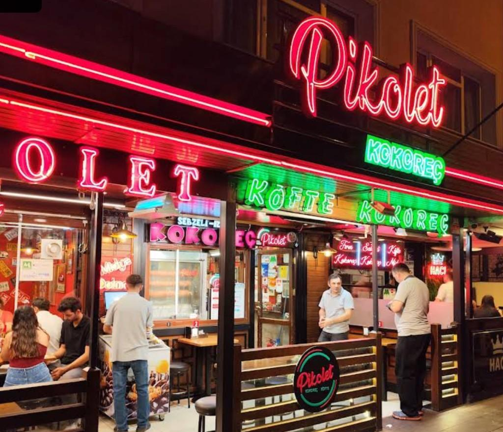
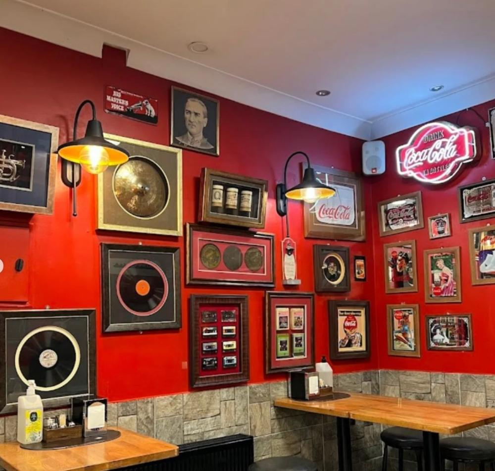

Ankara • Çankaya
Ankara'nın Efsane Kokoreççisi
Taze malzeme, ustalıkla pişirilmiş kokoreç ve ızgara lezzetleri burada bir araya geliyor. Pikolet’te, kuşaktan kuşağa aktarılan tariflerle kokoreç ve ızgara kültürünü Ankara’nın kalbinde yaşatıyoruz.
Menüyü İncele
Gün boyu sıcak ızgara, gece geç saatlere kadar servis.
Pikolet Ankara
Izgaradan çıkan, unutulmaz bir sokak lezzeti.
Ankara'da yıllardır aynı kalite, aynı ateş ve aynı efsane tat.
%100
Taze & Yerinde Hazırlanmış
Her gün taze hazırlanan kokoreç ve ızgara ürünleri.
Mekandan Kareler
Pikolet ruhunu yansıtan fotoğraflar.

Biz Kimiz?
Sokak lezzetinin en rafine hâli, Pikolet’te.
Pikolet, Ankara’da gece hayatının ve sokak kültürünün ayrılmaz bir parçası. Ustalarımız yılların birikimini, özenle seçilmiş ürünlerle buluşturuyor. Odun ateşinin üzerinde ağır ağır pişen kokoreç ve köftelerimiz; hem müdavimlerin hem de Ankara’ya yolu düşenlerin favorisi.
Amacımız; her lokmada, geleneksel sokak lezzetini modern ve hijyenik bir ortamda sunmak. Samimi, sıcak ama bir o kadar da premium bir deneyim.
Özel Baharat Karışımı
İmza DokunuşKokoreçlerimiz, sadece Pikolet’e özel, dengeli bir acılık sunan özel baharat karışımıyla hazırlanır. Ne fazla ağır, ne de yavan.
Gece Geç Saatlere Kadar Açık
Gececi DostuMaç sonrası, konser çıkışı veya dostlarla uzun sohbetlerin ardından, sizi her zaman sıcak bir masayla karşılıyoruz.
Pikolet, Ankara’da kokoreç dendiğinde akla gelen ilk adres.
Konum & İletişim →